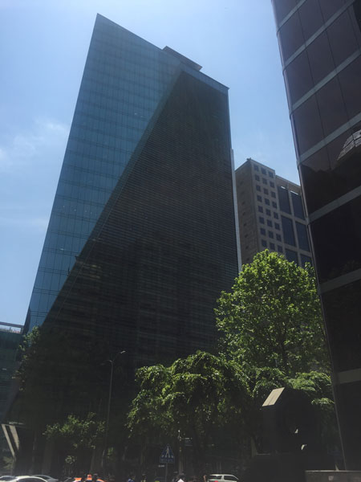
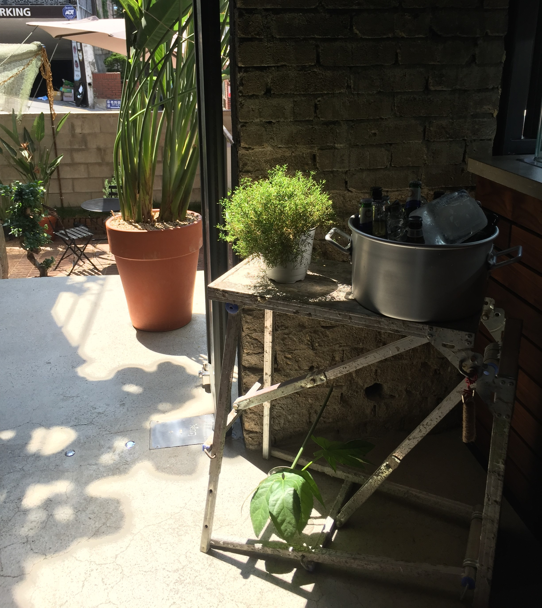

일요일, 출근을 했다. 늘어지게 자겠다고 마음먹고 자는데 아침에 걸려온 상사의 업무 전화에 회사로 나올 수 밖에 없었다.
"명조씨~ 부탁해!"
급한 일도 아니건만, 상사는 얄밉게도 기어이 나를 회사로 불러드렸다.
사무실로 들어와 모니터를 켜며 앉았다. 나와 같이 출근한 이들의 신경질적인 타자 소리에 참을 수 없는 화가 치밀어 올랐다. 메일을 확인하다 더 이상 사무실에 앉아 있을 수 없겠다 싶어 급하게 노트북만 챙겨 회사건물 밖으로 뛰쳐나왔다. 아직 5월밖에 되지 않았는데 날씨는 또 왜이리 더운지 숨이 막혔다.
주변 카페나 가자 싶어 골목 안으로 들어섰다. 멍 때리며 걷다 먹자골목을 지나 주택가까지 들어서게 되어 돌아가야겠다고 생각하던 찰나 색다르다 싶은 주택을 발견했다. 카페였다! 저 곳이다 싶어 걸음을 서둘렀다. 돌과 올리브그린색의 천막 그리고 크고 작은 화분들이 입구에 놓여져 있었다.
“어서오세요.”
친절한 직원의 인사에, 전혀 생각 지도 못했던 카페 분위기에 흉측스러웠을 내 표정이 조금은 펴졌으리라.
“아이스 아메리카노랑 오렌지쿠헨 하나 주세요.”
주문을 하고 왼쪽을 슬쩍 보던 순간 시선이 멈췄다. ‘싱그럽다!’ 투박한 철제 선반과 얼음과 함께 있는 맥주, 잎 사이사이로 빛이 든 이름 모를 식물을 보는 순간 치밀어 오르던 감정이 모두 정리가 되었다.
